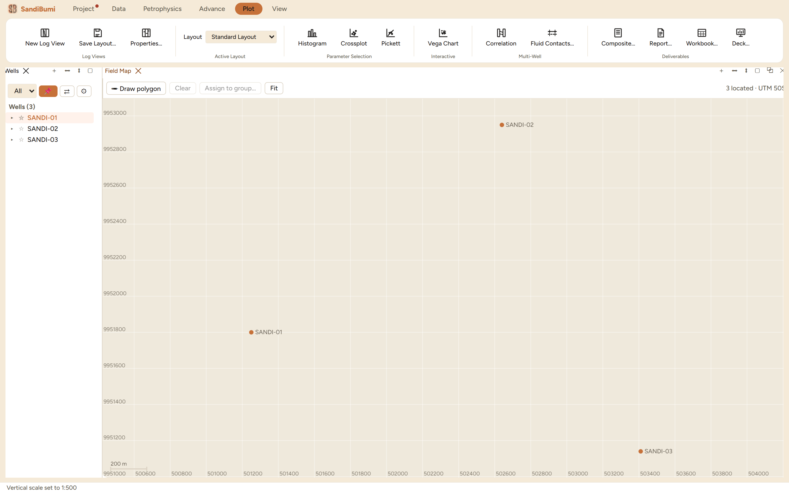

The Field Map plots the wells at their surface locations and turns
position into selection: draw a polygon around a fault block and the wells
inside become a well group, which then filters every batch tool in the
application. Reach for it when "which wells" is a question about geography
(a compartment, a platform, a lease line) rather than a list of
names.
The pane

The three example wells located from an imported coordinates
file, "3 located · UTM 50S", with the 200 m scale bar and
the polygon tools in the header.
Locations come from an import (Data ▸ a well-locations
table with well name, easting and northing); the header counts how many
wells are located and names the coordinate system, so an unlocated well
is a visible gap, not a silent absence.
Draw polygon → Assign to group… is the selection
workflow: the polygon's wells become a named well group, and at most
one group is active at a time.
Fit frames the located wells; wheel zooms, drag pans, and the
scale bar keeps distances honest at any zoom.
Step by step
Import the coordinates once, then open
Petrophysics ▸ Batch ▸ Field Map… and press
Fit.
To work a subset, Draw polygon around it and
Assign to group… under a name that says what it is (a
block, not "selection 3").
Activate the group and every batch dialog's well list, the Wells
pane, and the dashboard follow it until it is cleared.
Reading the result
The map is deliberately a working surface, not a basemap: no imagery, no
contours, just located wells on a true-scale grid in the delivery's own
coordinate system. The count in the header is the reconciliation:
"3 located" against three wells in the project means every well found its
coordinates; a shortfall names the wells still riding on defaults before
any polygon is trusted.
QC and pitfalls
The coordinate system is part of the data. Eastings from one
UTM zone plotted in another put wells kilometres off; the header names
the zone so a mismatched delivery is caught by reading, not by
surveying.
A polygon selects what it contains today. Wells imported
later are not retroactively added to the group; redraw when the well
stock changes.
An active group is a global filter. If a batch run seems to
be missing wells, check the map's group before suspecting the
data.